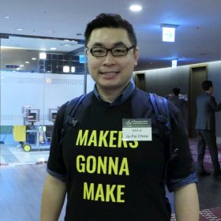

Programa
¡Muchas gracias por todas las propuestas recibidas! Muy pronto publicaremos el programa detallado de las jornadas. Lo que sí tenemos programado son las conferencias de 3 invitados que esperamos sean del interés de toda la comunidad R:
Ponencias invitadas
| Max Kuhn (RStudio) Autor del paquete caret y de su evolución tidymodels | |
 |
Bernd Bischl (Universidad de Munich) Autor principal del paquete mlr y de su reciente evolución mlr3 |
|  | Jo-Fai Chow (H2O) Representante, evangelista y dinaminzador de comunidades usuarias de la solución H2O |
Programa Preliminar
SEDE REPSOL JUEVES 14
Las jornadas comienzan el jueves 14 de Noviembre en el Campus Repsol.
En la pestaña "Dónde estamos" de esta página
encontraréis un mapa con coordenadas exactas y las indicaciones necesarias para llegar en transporte público (recomendable) o vehículo particular
| JUEVES | Programa Jueves 14/nov/19 Auditorio REPSOL |
|---|---|
| Aprox. 16h. | Repsol + Comunidad R-hispano |
| 16:30-18:00 | Max Kuhn |
| 18:00-18:30 | Descanso |
| 18:30-19:00 | Mesa Redonda empresas |
SEDE UNED 15 Y 16 NOVIEMBRE
CÓMO LLEGAR A LA SEDE UNED
Las jornadas continúan viernes y sábado en la Facultad de Educación de la UNED (sede UNED en adelante).
Aquí encontraréis un mapa con coordenadas exactas. También en la página UNED que ponemos a continuación.
La UNED proporciona recomendaciones para el acceso a su sede en la Facultad de Educación en transporte público. Si queréis ir en vehículo particular, las vías de acceso son, desde Moncloa y A-6, la avenida Complutense, al final de la misma y siguiendo las indicaciones a Derecho de UCM o Informática de UNED. La otra vía de acceso es la calle Sinesio Delgado, una de las salidas de la M-30 justo al lado de la salida a A-6, o desde Castellana / Pza. Castilla, saliendo de la misma hacia Ciudad Universitaria.
Sobre aparcamiento, esta zona es de aparcamiento libre pero justo al lado de la Facultad de Educación puede ser difícil encontrar plaza. Sí que hay plazas suficientes (normalmente) en la zona de la Facultad de Informática UNED
| VIERNES | Programa Viernes 15/nov/19 Sede UNED | Sala |
|---|---|---|
| 8:30 | Registro | |
| 9:00 | Inauguración | |
| 9:30-10:30 | Bernd Bischl: mlr | |
| 10:30-11:40 | Comunicaciones (sesiones paralelas) | |
| 11:40-12:15 | Café | |
| 12:15-14:00 | Comunicaciones (sesiones paralelas) | |
| 14:00-15:00 | Comida | |
| 15:00-17:30 | Talleres | |
| 17:30-18:00 | Sesión relámpago - posters | |
| 18:00-19:00 | Grupos locales | |
| 19:00-20:00 | Asamblea de socios R-Hispano | |
| 20:00-21:00 | Evento social en la misma sede UNED |
| SÁBADO | Programa Sábado 16/nov/19 Sede UNED | Sala |
|---|---|---|
| 9:00-11:00 | Comunicaciones | |
| 11:00-11:20 | Descanso | |
| 11:20-12:20 | Jo-Fai Chow: H2O | |
| 12:20-13:20 | Periodismo de datos | |
| 13:20-13:30 | Premio mejor trabajo joven y Cierre de jornadas |
Organización
Las Jornadas no serían posibles sin la colaboración desinteresada de los integrantes de los comités organizador (encargado de las cuestiones de logística, etc.) y académico (que gestiona las ponencias, talleres, etc.).
Comité organizador
- José Luis Cañadas Reche *
- Virgilio Gómez Rubio
- Beatriz Hernández
- Leonardo Hansa
- Cristina Santa Marta
- Carlos Ortega
- Inés Huertas
- Marta Vicente Sánchez
- Santiago Mota Herce
- Paula López Casado
- Pedro Concejero Cerezo
- Francisco Jesús Rodríguez Aragón
- Sandra Barragán Andrés
- Antonio J. Perán
- Enrique Lasso (Repsol)
Comité de programa
- Emilio López Cano *
- Emilio Torres Manzanera
- Felipe Ortega
- Ana Belén Marín Valverde
- Luis Mariano Esteban
- Jorge Ojeda
- Aurora González Vidal
- Antonio Maurandi López
- Fran Ibañez López
PATROCINIO
Agradecemos la colaboración de los
patrocinadores, sin la que las jornadas
no serían posibles. Además, tú (a través de tu empresa
o institución) también puedes convertirte en patrocinador/a
de las Jornadas.
Puedes consultar los detalles en
este documento.
Organizadores

Patrocinadores

Apoyo Institucional
Contacto
Puedes contactar por correo con el
comité organizador
o a esta dirección
coordinador comité